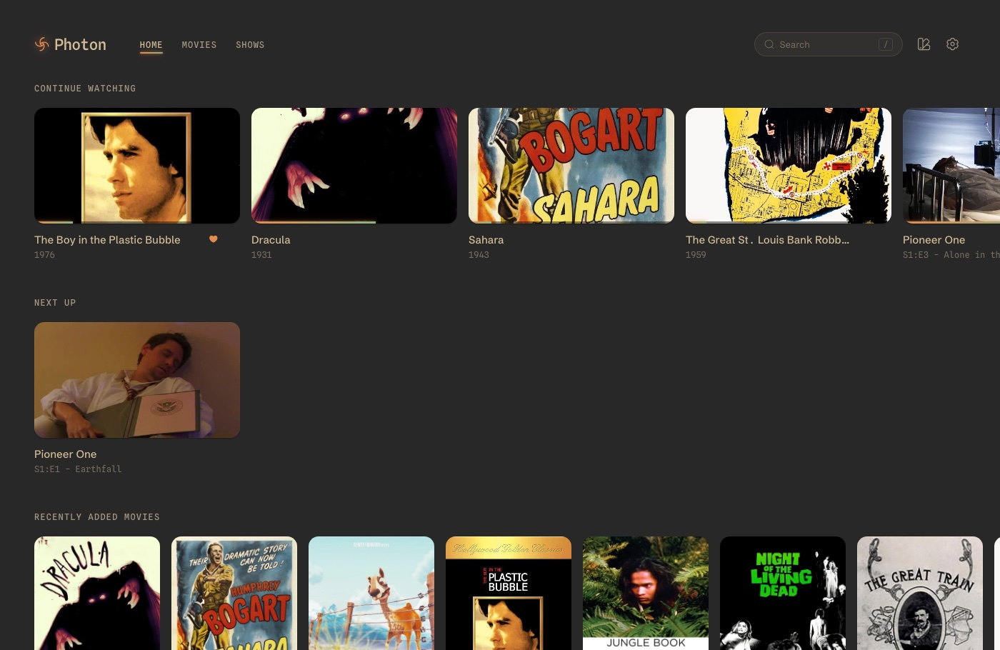
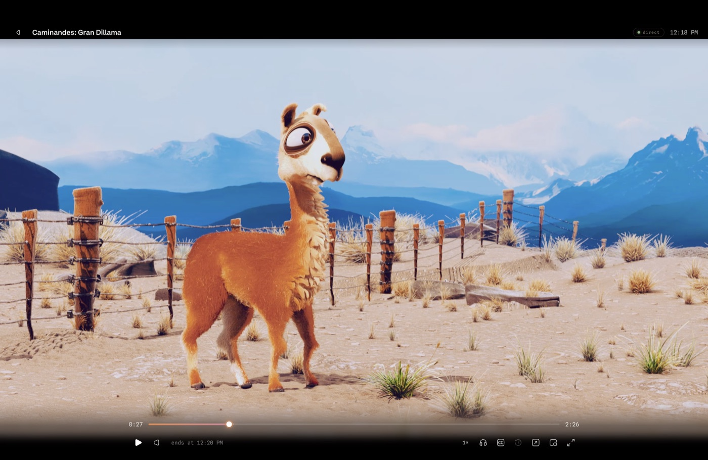
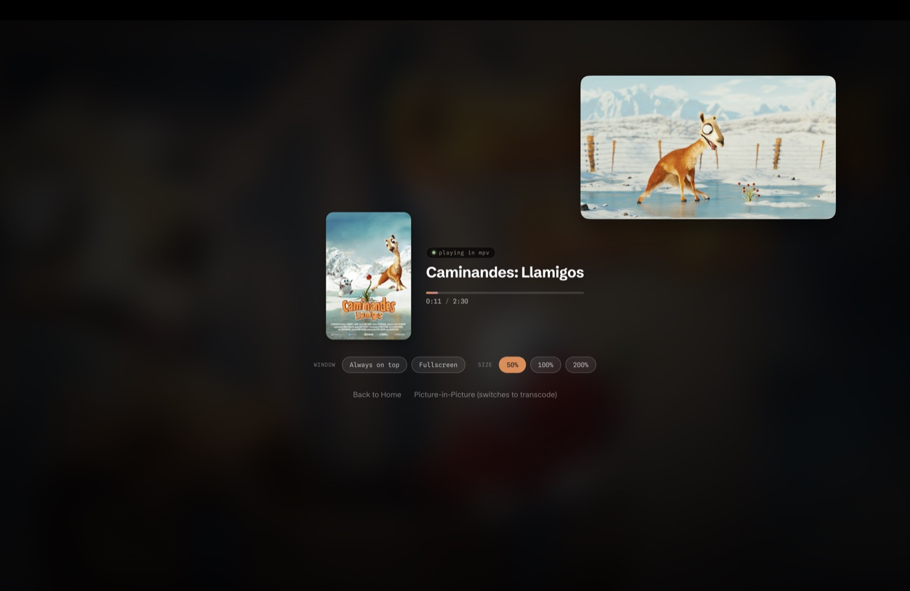
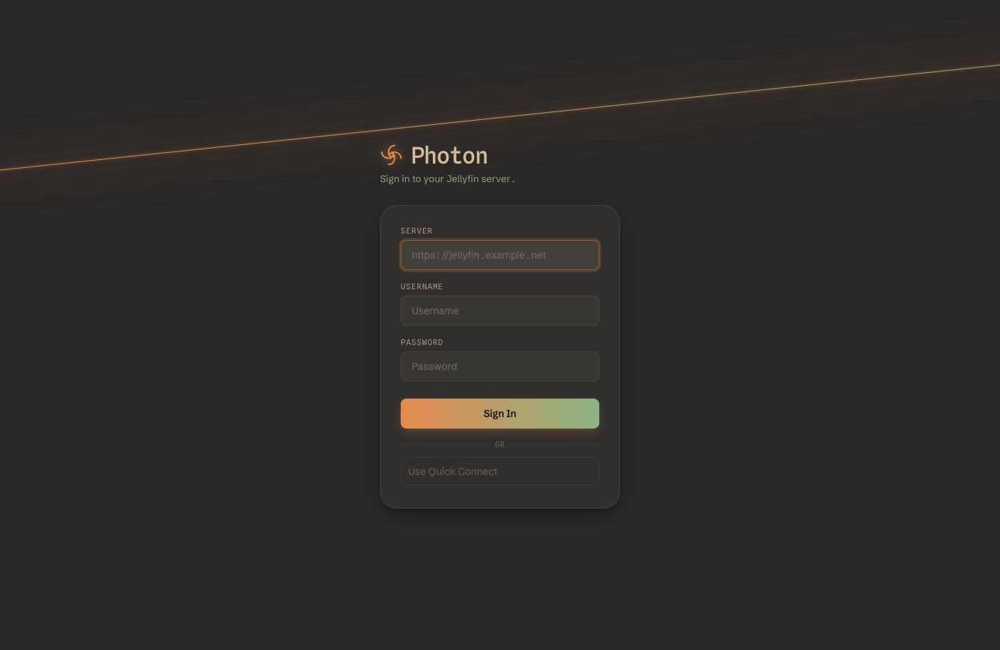

A calm, minimal desktop media player for Jellyfin, built around real mpv playback.
Photon is not a media manager. It is a media player.
Every other Jellyfin desktop client plays through the browser's
<video> tag, or shells out to a separate mpv window.
Photon embeds mpv directly, in-process, via its render API — compositing straight into
Photon's own window, GPU-rendered with automatic CPU fallback. Always direct play: the
server never has to transcode just because the client's playback is weak. This is the whole
reason Photon exists.
macOS: verified, working — brew install --cask mahi160/photon/photon.
Windows/Linux builds run but video doesn't render yet (#27). Releases are flagged pre-release on GitHub until that's fixed.
What it does
- mpv-quality playback in the same window — GPU-rendered, CPU fallback, always direct play
- Continue Watching, Recently Added Movies, Recently Added Shows — nothing else on Home
- Movies and TV Shows grids, every library merged
- Instant local search plus server-side episode search
- Audio and subtitle track switching; delay and styling for text subtitles
- Picture-in-Picture, fullscreen, playback speed
- Keyboard-first controls
- Watch progress synced back to Jellyfin
Keyboard shortcuts
| Space | Play / pause |
| ← / → | Seek ±10s |
| ↑ / ↓ | Volume |
| F | Fullscreen |
| P | Picture-in-Picture |
| M | Mute |
| Esc | Exit fullscreen |
| Ctrl/⌘+F | Search |
Picture-in-Picture
PiP hands playback off to a standalone mpv window instead of
shrinking Photon's own — genuinely optional: no system mpv on
PATH just means no PiP button, core playback (in-process, bundled) is
unaffected either way.
brew install mpv # macOS choco install mpv # Windows sudo apt install mpv #
Debian/Ubuntu
macOS Gatekeeper
Photon's macOS build is ad-hoc signed, not notarized (that requires a paid Apple Developer
account). Gatekeeper blocks any downloaded app in that state — a false positive, not a
corrupt download.
brew install --cask mahi160/photon/photon handles this automatically;
installing the .dmg by hand needs this once, after moving Photon to
Applications:
xattr -cr /Applications/Photon.app
Screenshots
-

-

-

